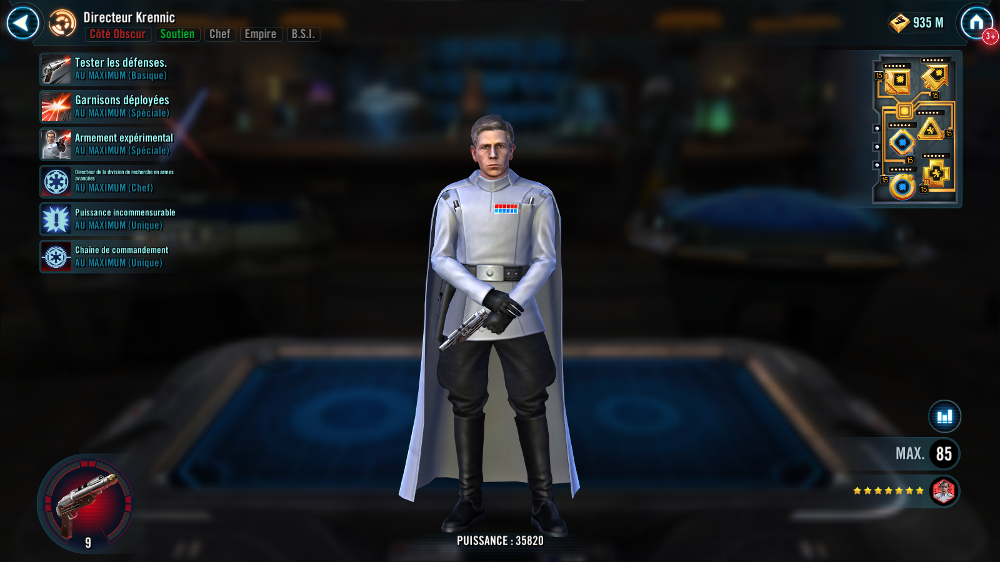
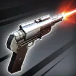
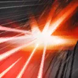

Director Krennic
Intimidating Empire Support who inflicts devastating debuffs and slows enemies
Intimidating Empire Support who inflicts devastating debuffs and slows enemies


Deal Special damage to target enemy and inflict Tenacity Down for 3 turns. If the enemy is already Exposed at the start of the turn, Target Lock them for 2 turns.

Deal Special damage to all enemies with a 70% chance to Stagger them for 2 turns. Blind all Target Locked or Exposed enemies for 2 turns.
If any enemies are debuffed, revive Death Trooper with 20% Health for each debuffed enemy. If Death Trooper is present, he is called to assist. Call all other ISB allies that are Rank 2 or above to assist, dealing 50% less damage.
Deal Special damage to target enemy and inflict a debuff:
- Attackers: Stun for 2 turns
- Healers and Supports: Ability Block for 2 turns
- Tanks: Buff Immunity for 2 turns
If the target is a Rebel, also inflict Speed Down for 2 turns.
If all allies are ISB, Expose and inflict Vulnerable to the target enemy for 2 turns, and Director Krennic gains Speed Up for 2 turns.
Empire allies gain 25% Critical Chance and 25% Potency. Debuffed enemies who are Critically Hit during an Empire ally's turn suffer Ability Block for 1 turn. This effect can't be Resisted. Empire allies recover 10% Protection whenever they score a Critical Hit.

Director Krennic gains 10% Critical Damage for each debuffed enemy and 10% Critical Damage for each Rebel enemy. Director Krennic also gains 10% Critical Chance for each ISB ally. If Death Trooper is present he also gains these bonuses.
Omicron Boost : While in Grand Arenas: Krennic gains +30% Defense Penetration, Health, and Offense. If Death Trooper is present he also gains these bonuses. Whenever Krennic attacks, Death Trooper is called to assist and has his cooldowns reduced by 1. While allied Death Trooper is active, both Krennic and Death Trooper ignore Taunt effects.
If all allies are ISB, Director Krennic starts the encounter at Rank 3 and can't have his Rank decreased. Whenever a Rank 3 ISB ally is defeated, dispel all buffs from all enemies inflicted with Target Lock. If Major Partagaz is the ally in the Leader slot, all chance effects are increased to 100%. If there are 5 ISB allies present at the start of battle, Director Krennic summons a Death Trooper with the ISB tag, and when Director Krennic uses the ability Deployed Garrisons, summon Death Trooper instead of reviving him. Grant Death Trooper Rank 1, which can't be increased.